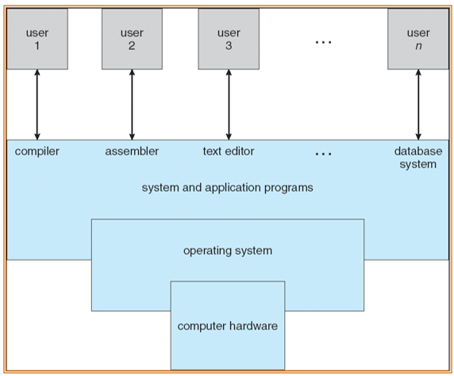

约 3445 个字 12 张图片 预计阅读时间 17 分钟
Chap 1 | Introduction
章节启示录
本章节是OS的第一章。主要介绍了一些基本的概念，以及对操作系统的概述。
1.Overview¶
- 什么是操作系统？
在计算机用户和计算机硬件之间充当媒介的程序。
让硬件能够更加高效地运转。- resource allocator
- control program

- 操作系统的组成（冯诺依曼架构）
以内存为中心
一个或多个cpu、设备控制器通过公共总线连接，提供对共享内存的访问
cpu和设备竞争内存周期的并发执行

I/O设备和CPU可以并发执行。
每个设备控制器负责一个特定的设备类型。
每个设备控制器都有一个本地缓冲区(local buffer)。
CPU将数据从主存移到本地缓冲区。（外卖放到快递柜）
I/O是从设备到控制器的本地缓冲区。(退货的货物放到快递柜)
设备控制器通过中断(interrupt)(通过系统总线via system bus)通知CPU它已经完成了它的操作。
并发(Concurrent)与并行(Parallel)
并发是在同一时间间隔内
并行是每个时刻两者都同时执行
9点-10点只吃面包，10点到11点只写字，11点到12点只吃面包，那么在9点到12点吃面包和写字就是并发执行的。
9点到12点左手吃面包右手写字，那么在9点到12点吃面包和写字就是并行执行的。

-
中断
中断被广泛的使用，操作系统需要处理各种中断。
中断通过包含所有服务例程地址的中断向量(interrupt vector)将控制传递给中断服务例程(ISR)。
中断架构(Interrupt architecture)必须保存被中断指令的地址。
在处理另一个中断时禁用传入中断，以防止中断丢失。 -
中断类型
- 硬件中断：I/O中断
- 软件中断：陷阱(trap)是由错误(error)或用户请求(request)(后者通常称为系统调用)引起的软件生成的中断。
注意:名称在不同的体系结构中可能会有所不同。
操作系统是中断驱动的。
- 中断处理
操作系统通过存储寄存器和程序计数器来保存CPU的状态。
确定发生了哪种类型的中断:
1. 通过泛型例程(generic routine)进行轮询(polling)
2. 矢量(vector)中断系统(中断表)
单独的代码段决定对每种类型的中断应该采取什么行动

-
两种I/O的方法
异步是非阻塞式的，不需要等待当前指令完全执行完毕（但非阻塞式不等于异步I/O处理） -
Direct Memory Access Structure
用于能够以接近内存速度传输信息的高速I/O设备。
设备控制器将数据块从缓冲存储器直接传输到主存储器，无需CPU干预。
每个块(per block)只生成一个中断，而不是每个字节(per byte)生成一个中断。 -
Storage Structure 主存(Main memory)——只有CPU可以直接访问的大容量存储介质。
辅助存储器(Secondary storage)——主存储器的扩展，提供大的非易失性存储容量。
磁盘——覆盖有磁性记录材料的刚性金属或玻璃盘片。- 磁盘表面逻辑上划分为磁道，磁道再细分为扇区。
- 磁盘控制器决定设备和计算机之间的逻辑交互。
-
Migration of Integer A from Disk to Register
多任务(Multitasking)环境必须小心使用最新的值，无论它存储在存储层次结构中的哪个位置
多处理器(Multiprocessor)环境必须在硬件中提供缓存一致性，以便所有cpu的缓存中都有最新的值
-
Multiprocessor Systems
Each CPU processor has its own set of registers
All processors share physical memory over the system bus

-
Multicore Systems
片内通信比片间通信快(在同一个L2 cache中进行会比较快，减少了数据的搬运)
功耗更低(适合移动设备)
-
The NUMA Architecture
cpu之间通过共享系统互连连接
随着添加更多处理器，扩展更有效
跨互连的远程内存很慢
操作系统需要仔细的CPU调度和内存管理

-
2.操作系统结构(分类)¶
-
Multiprogramming needed for efficiency (CPU utilization 利用率)
- 单用户无法使CPU和I/O设备始终处于繁忙状态
- 多路编程组织工作(代码和数据)，所以CPU总是有一个要执行
- 系统中总工作的一个子集保存在内存中
- 选择一个工作并通过工作调度运行
- 当它必须等待(例如I/O)时，操作系统切换到另一个工作
-
Timesharing (multitasking) is logical extension
分时(多任务)是一种逻辑扩展，在这种扩展中，CPU频繁地切换工作，用户可以在每个工作运行时与之交互，从而创建交互式计算(交互性)。每一个时刻只存一个用户的信息。- 响应时间应小于1秒，以便让用户之间感受不到彼此的存在
- 每个用户至少有一个程序在内存中执行 => 进程
- 如果多个作业准备同时运行 => CPU调度
- 如果进程不适合内存，交换(swapping)将它们移进移出以运行
- 虚拟内存(Virtual memory)允许执行不完全在内存中的进程
3. Operating-System Operations¶
中断和异常的定义¶
- 中断也称外中断，是指来自CPU执行指令外部的事件，通常用于信息输入/输出
- 设备发出的I/O结束中断，表示设备输入/输出处理已经完成。
- 时钟中断，表示一个固定的时间片已到，让处理机处理计时、启动定时运行的任务等。
- 异常也称内终端，是指来自CPU执行指令内部的事件，如程序的非法操作码、地址越界、运算溢出、虚存系统的缺页及专门的陷入指令等引起的事件。异常不能被屏蔽，一旦出现，就应立即处理。
关于内中断和外中断的联系与区别如下所示：
-
外中断可分为可屏蔽中断和不可屏蔽中断。
- 可屏蔽中断是指通过INTR线发出的中断请求，通过改变屏蔽字可以实现多重中断，从而使得中断处理更加灵活。
- 不可屏蔽中断是指NMI线发出的中断请求，通常是紧急的硬件故障，如电源掉电等。此外，异常也是不能被屏蔽的。
-
异常可分为故障、自陷和终止。
- 故障通常是指令执行引起的异常，如非法操作码、缺页故障、除数为0、运算溢出等。
- 自陷是一种事先安排的“异常”事件，用于在用户态下调用操作系统内核程序，如条件陷阱指令、系统调用指令等。
- 终止是指出现了使得CPU无法继续执行的硬件故障，如控制器出错、存储器校验错等。
故障异常和自陷异常属于软件中断，终止异常和外部中断属于硬件中断。
因此，我们需要保护:
- 双模式(Dual-mode)操作:允许操作系统保护自身和其他系统组件
- 用户模式(User mode)和内核模式(kernel mode)
- 硬件提供的模式位(Mode bit)
- 提供区分系统是在运行用户代码还是内核代码的能力
- 特权指令:只能在内核模式下执行(only execute in kernel mode)
- 系统调用(System calls)将模式更改为内核(change mode to kernel)，从调用返回将其重置为用户
特权指令与非特权指令
- 特权指令：不允许用户直接使用的指令，如I/O指令、关中断指令、内存清零指令，存取用于内存保护的寄存器、送PSW到程序状态字寄存器等的指令。
- 非特权指令：允许用户直接使用的指令，它不能直接访问系统中的软硬件资源，仅限于访问用户的地址空间，这也是为了防止用户程序对系统造成破坏。
-
Transition from User to Kernel Mode

-
Timer & Interrupt
- 计时器防止无限循环/进程占用资源
- 在特定时间后设置中断
- 操作系统递减计数器
- 当计数器为零时产生中断
- 在调度过程之前设置，以重新控制或终止超出分配时间的程序
-
Process Management
进程(process)与程序(program)
进程(process)是正在执行的程序(program)。它是系统内的一个工作单元。程序是一个被动的实体(passive entity)，过程是一个主动的实体(active entity)。
以话剧为例，程序像是剧本，进程像是演出。
进程需要资源来完成它的任务
CPU、内存、I/O、文件
初始化数据
进程终止需要回收任何可重用资源
- 单线程进程:
- 有一个程序计数器(program counter)来指定下一个要执行的指令的位置
- 进程按顺序执行指令，每次执行一条，直到完成
-
多线程进程:
- 每个线程有一个程序计数器(program counter per thread)
- 通常系统有许多进程，一些用户，一些操作系统并发地运行在一个或多个cpu上
- 通过在进程/线程之间复用cpu来实现并发性(multiplexing the CPUs)多路复用
-
Process Management Activities(进程管理)
- 创建和删除用户进程和系统进程 Creating and deleting
- 暂停和恢复进程 Suspending and resuming
- 提供流程同步机制 synchronization
- 提供流程通信机制 communication
- 提供死锁处理机制 deadlock
-
Memory Management(内存管理)
- 所有数据(data)在处理前后都必须在内存中
- 所有指令(instruction)必须在内存中才能执行
-
内存管理来决定什么是在内存中
优化CPU利用率和计算机对用户的响应
-
内存管理活动
- 跟踪内存的哪些部分当前正在被谁使用
- 决定将哪些进程(或其中的一部分)和数据移入和移出内存
- 根据需要分配和释放内存空间
-
Storage Management(存储管理)
- 操作系统提供统一的、逻辑的信息存储视图 抽象物理属性到逻辑存储单元-文件 file
-
每种介质由设备(即磁盘驱动器、磁带驱动器)控制。
不同的属性包括访问速度、容量、数据传输速率、访问方法(顺序或随机)
-
Mass-Storage Management(海量存储管理)
操作系统活动
- 空间管理
- 存储分配
- 磁盘调度
-
文件系统管理
- 文件通常组织到目录(directories)中
- 对大多数系统进行访问控制(access control)，以确定谁可以访问什么
操作系统活动
- 创建和删除文件和目录
- 操作文件和目录的原语
- 将文件映射到辅助存储
- 将文件备份到稳定(非易失性)存储介质上
-
I/O Subsystem
操作系统的一个目的是向用户隐藏硬件设备的特性——易于使用和编程- I/O子系统负责:
- I/O的内存管理，包括缓冲 buffering (在传输数据时临时存储数据)、缓存 caching(将部分数据存储在更快的存储中以提高性能)、假脱机 spooling (一个作业的输出与其他作业的输入重叠)
全称: simultaneous peripheral operations online - 通用设备驱动程序接口
- 特定硬件设备的驱动程序
- I/O的内存管理，包括缓冲 buffering (在传输数据时临时存储数据)、缓存 caching(将部分数据存储在更快的存储中以提高性能)、假脱机 spooling (一个作业的输出与其他作业的输入重叠)
- I/O子系统负责:
4.OS Purposes¶
- Abstraction 抽象与封装，只暴露一些接口
- Multiplex 空间管理：内存，时间管理：进程
- Isolation 用户和内核
- Sharing 不同用户对于内存磁盘CPU都是共享的
- Security 特权指令的安全，权限等
- Performance 更高的性能
- Range of uses 更广泛的应用，面对不同场景（网络传输、编译……）跨平台使用
题目收录
- 现代操作系统中最基本的两个特征是：并发和共享（两者互为存在条件）
- 用户可以通过（ ）两种方式来使用计算机：命令接口和系统调用
- 系统调用是由操作系统提供给用户的，它只能通过用户程序间接使用
- 系统调用的目的是请求系统服务
- 在单CPU系统中，同一时刻只能有一个进程占用CPU，因此进程之间不能并行执行。
- 脱机技术是指在主机以外的设备上进行输入/输出操作，需要时再送主机处理，以提高设备利用率。
- 批处理系统的主要缺点是：无交互能力
- 操作系统的基本类型主要有批处理操作系统、分时操作系统、实时操作系统
- 分时系统中，当时间片固定时，用户数越多，每个用户分到的时间片就越少，响应时间就相应变长。分时系统的响应时间 \(T≈Q*N\) , \(Q\) 为时间片， \(N\) 为用户数。
- 用户态到核心态的转换是由硬件完成的
- 在操作系统中，只能在核心态下运行的指令是____。A.屏蔽中断 B.设置时钟的值 C.修改内存单元的值 D.停机 选C。其他都是特权指令。
- “访管”指令仅在用户态下使用，执行“访管”指令将用户态转变为核心态。且其不可能在核心态下进行，这是用户程序“自愿进管”的手段。